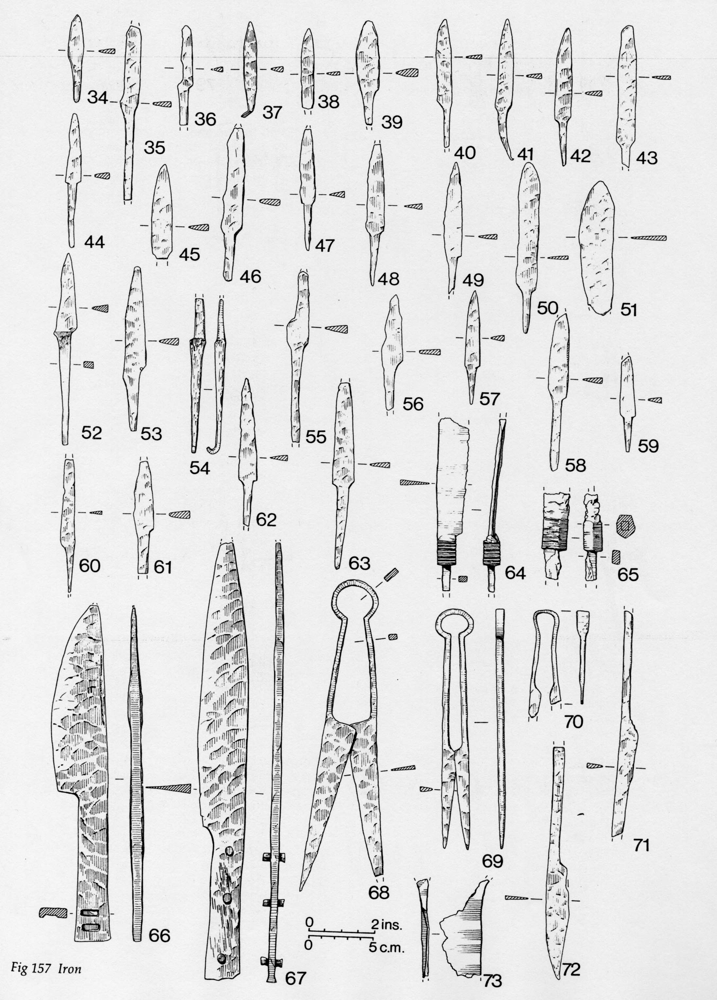
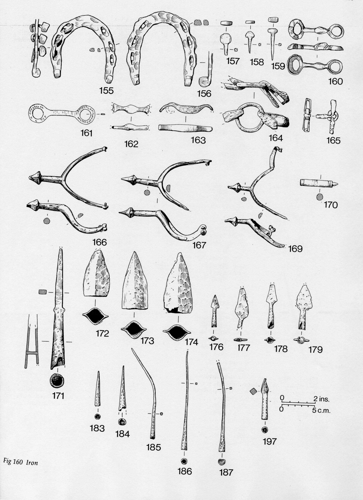
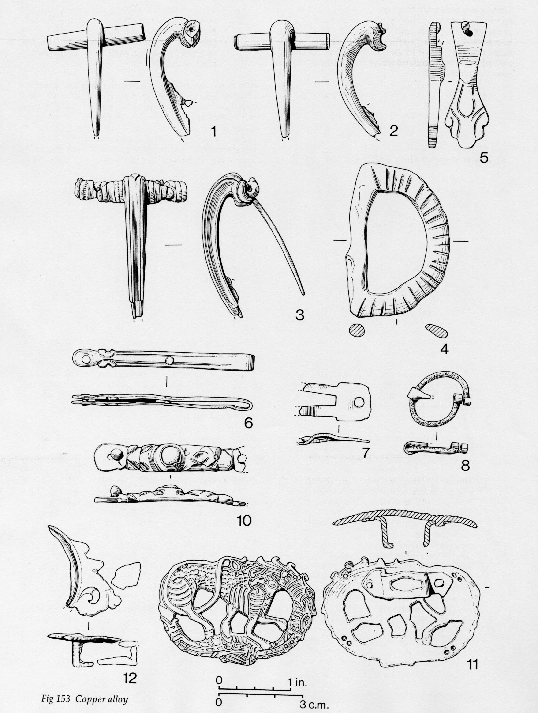

Goltho - the finds
As on any archaeological site, many objects were found amidst the remains of buildings and other features. Often these objects were broken or discarded, sometimes they may have been lost.
Iron objects Bits of objects made of lead, copper, and iron were found at Goltho.The iron objects, some of which are pictured here, correspond nicely to lists of tools that can be found in written texts about estate management. Most of the metalwork was probably made in the village. A smithy from the late 14th-early 15th century was found in the village, and it probably replaced earlier versions. At Goltho, objects include tools for metalworking (a hammer-head), woodworking (an adze, auger, and hammers), textile manufacturing (wool-comb or heckle teeth, shears including sheep shears), leatherworking (needle, awls), and agriculture (sickle, weedhook). Household items include candlesticks, chains, and buckles. There were also knives and shears for other purposes (depicted in this drawing), and ironwork from buildings and furniture fittings. As shown on the village page, there were iron locks, padlocks, and keys. A spearhead, javelin heads, and arrowheads were also found. |
 |
Objects related to horses Finally, there were numerous iron fittings for equestrian activities: horseshoes, horseshoe nails, bridle bits and harness fittings, and spurs, all shown here. |
 |
Pottery A total of 1549 pottery vessels (or pieces of vessels) have been studied from the Goltho manor/castle, and many more from the peasant houses. In both cases, most of the pottery came from regional pottery manufacturing industries in the nearby towns of Lincoln or Torksey, thus was not made on site. Almost all of it was wheel-made. Ceramics included pitchers, bottles, cooking pots, bowls, lamps, and fire-covers (13th-14th c.). |
Jewellery Objects 4-11 are buckles, brooches, strap ends, and an earring, all of copper alloy. |
 |
Animal bones A total of 2938 animal bones were found on the manor site. For the later medieval period, the proportion of bones was: 10.6% cattle |